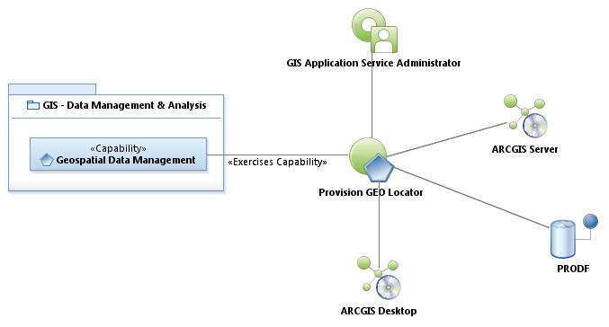
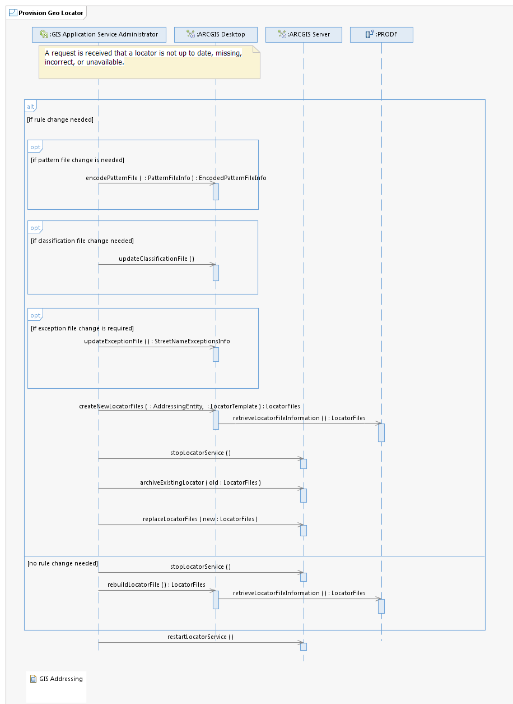

Use Case Model: Provision GEO Locator
Architect: Aaron Brown, IT Enterprise Architect, Senior
Date Last Modified: 6/01/2012
User Review: Lee Kinser, Sean McClurkan, Stephanie Jenson
Date: 06/01/2012
A request is received that a locator is not up to date, missing, incorrect, or unavailable.

Use Case Model: Provision GEO Locator

Sequence Diagram:
Provision GEO Locator